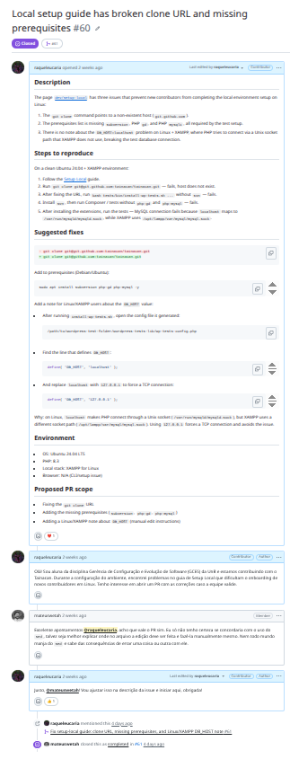
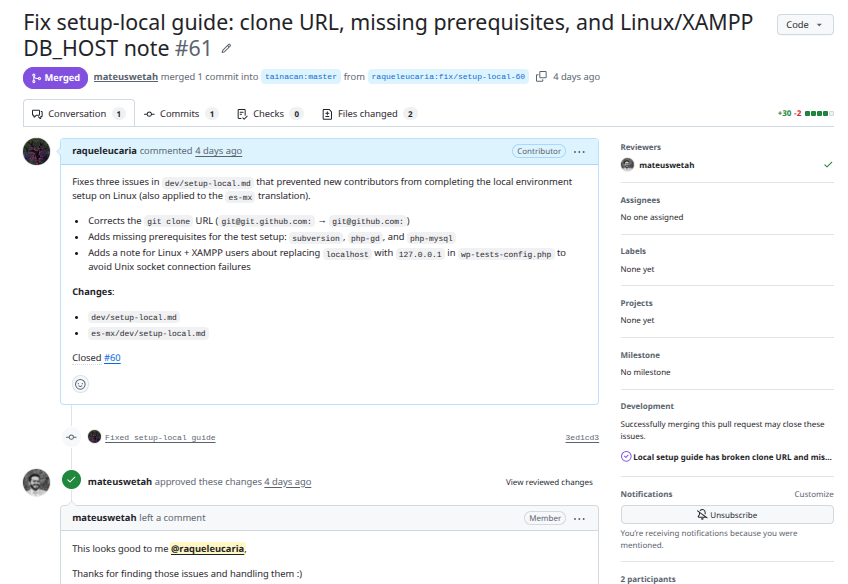

Diário de Bordo – Sprint 4
Informações da Sprint
| Item | Descrição |
|---|---|
| Sprint | Sprint 4 |
| Data de Início | 27/05/2026 |
| Data de Término | 08/06/2026 |
| Responsável | Raquel Eucaria |
Objetivo da Sprint
Após reunião com o Matheus, foi entendido que não haveria issues suficientes disponíveis no repositório oficial. Dessa forma, ficou definido que precisaríamos realizar uma investigação de melhorias e bugs nos repositórios para identificar oportunidades de contribuição. Meu objetivo pessoal nesta sprint foi, a partir dessa investigação, levantar e corrigir uma falha de documentação, abrindo a issue correspondente e ajustando o documento referente.
Planejamento e Atividades da Sprint
Levando em conta as dificuldades e problemas enfrentados na documentação de configuração de ambiente (mapeados na Sprint 0), direcionei meus esforços para corrigir essa lacuna no repositório oficial da wiki do Tainacan. Segui os padrões gerais da organização conforme mapeado no Guia de Contribuição: a documentação é mantida em inglês (comentários em português são permitidos, mas, visando o caráter internacional do projeto, o padrão é manter o conteúdo em inglês). Assim, ajustei tanto a documentação em inglês quanto em espanhol (doc em portugês não existe).
| Atividade | Status |
|---|---|
| Investigar melhorias/bugs nos repositórios | ✔️ |
| Abrir issue sobre a falha de documentação de configuração de ambiente | ✔️ |
| Ajustar a documentação em inglês e em espanhol | ✔️ |
| Submeter PR seguindo os padrões da organização | ✔️ |
Ferramentas e Tecnologias Utilizadas
| Ferramenta / Tecnologia | Finalidade |
|---|---|
| GitHub (Issues/PRs) | Abertura da issue e submissão da PR no repositório oficial tainacan-wiki |
| Git | Versionamento das alterações na documentação |
| Markdown | Edição da documentação (em inglês e espanhol) |
Atividades Realizadas em Detalhes
1. Investigação de melhorias e bugs
2. Abertura da issue de documentação: Levando em conta as dificuldades e problemas na documentação de configuração de ambiente — já mapeados na Sprint 0 —, abri a issue correspondente no repositório oficial da wiki para registrar e propor a correção: tainacan-wiki#60.

3. Ajuste da documentação e PR aprovada: Seguindo os padrões gerais da organização conforme o Guia de Contribuição (documentação mantida em inglês para alcance internacional), ajustei o documento de configuração de ambiente nas versões em inglês e em espanhol. A PR foi submetida e aprovada: tainacan-wiki#61.

Aprendizados e Dificuldades
Maiores Dificuldades:
- Escassez de issues disponíveis no repositório, exigindo uma investigação ativa de melhorias e bugs para encontrar uma contribuição relevante.
- Garantir a consistência entre as versões em inglês e em espanhol da documentação, mantendo o padrão internacional da organização.
Aprendizados:
- Como conduzir uma investigação de melhorias/bugs em um projeto open-source quando não há demandas pré-definidas.
- Aplicação prática dos padrões de contribuição da organização (idioma, fluxo de issue → PR) mapeados no Guia de Contribuição.
- A importância de transformar dificuldades reais enfrentadas pela equipe (como o setup de ambiente) em contribuições concretas para a comunidade.
Próximos Passos (Sprint 5)
- Investigar outras melhorias/bugs
- Realizar a solução
Histórico de Versões
| Versão | Data | Descrição | Autor(es) |
|---|---|---|---|
1.0 |
11/06/2026 | Criação do Diário de Bordo | Raquel Eucaria |